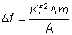

Enzyme Technology
Piezo-electric
biosensors
Piezo-electric crystals (e.g., quartz) vibrate under the
influence of an electric field. The frequency of this oscillation (f) depends on
their thickness and cut, each crystal having a characteristic resonant
frequency. This resonant frequency changes as molecules adsorb or desorb from
the surface of the crystal, obeying the relationshipes

(6.7)
where Df is the change in
resonant frequency (Hz), Dm is the change in mass of adsorbed material
(g), K is a constant for the particular crystal dependent on such factors as its
density and cut, and A is the adsorbing surface area (cm2). For any
piezo-electric crystal, the change in frequency is proportional to the mass of
absorbed material, up to about a 2% change. This frequency change is easily
detected by relatively unsophisticated electronic circuits. A simple use of such
a transducer is a formaldehyde biosensor, utilising a formaldehyde dehydrogenase
coating immobilised to a quartz crystal and sensitive to gaseous formaldehyde.
The major drawback of these devices is the interference from atmospheric
humidity and the difficulty in using them for the determination of material in
solution. They are, however, inexpensive, small and robust, and capable of
giving a rapid response.
Home
| Back | Next
This page was established in 2004 and last updated by Martin
Chaplin
on
6 August, 2014
|